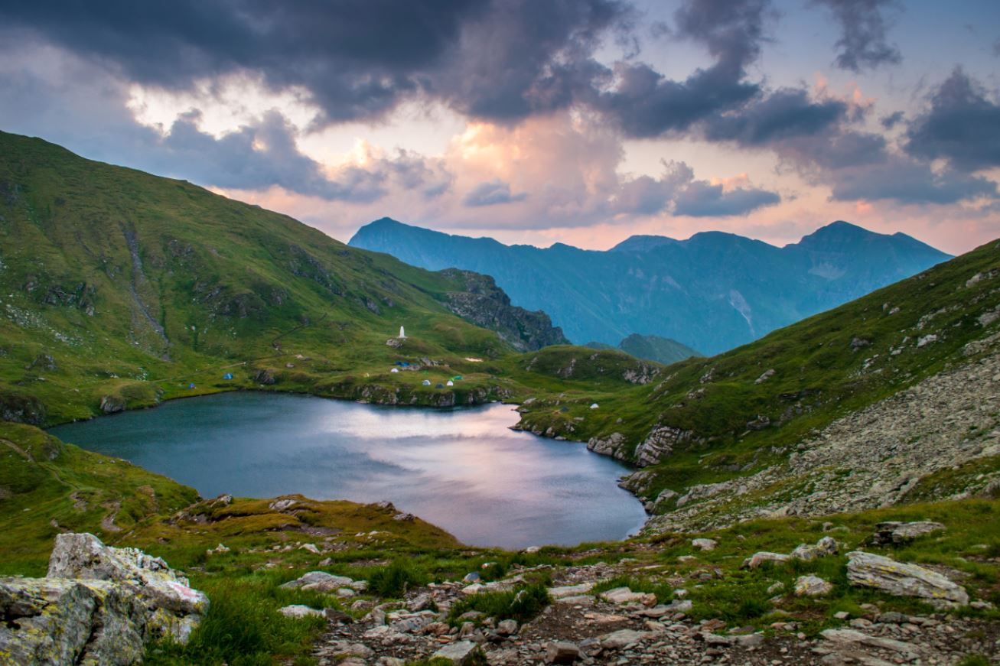

OO산
산은 멀리서 보면 평범한 여느 산과 그리 다를 바가 없다. 그러나 그곳에 가서 곳곳에 숨겨진 아름다운 골짜기와 바위와 나무를 둘러 보게 되면 그 산의 깍아지는 듯한 낭떠러지와 울창하게 들어선 나무들이, 곳곳의 깊디깊은 골짜기와 그 골짜기에서 흐르는 쪽빛 내와 한데 어울려 장엄한 경관을 이루어 놓았다.
OOO에 들어서면 온통 나무밖에 보이지 않으나 길이 꺾일 적마다 맑은 내와 만나고 산등성이에 오르면 잇대어 선 봉우리에서 또 다른 모습을 보게 된다. 그다지 높은 산은 아니지만 산의 모습이 수려하고 수석이 푸짐하여 전국의 5대 명산중의 하나인 서악으로 지칭되었다.
이 산에는 큰 골짜기가 일곱개가 있으며 거기서 흘러내리는 물줄기는 그 언저리에 있는 OOOOO 된다. 이 물줄기를 크게 셋으로 나누어 보면 첫째가 산의 남쪽인 신도안 지역으로 흘러 대전천과 유성천에 와닿는 갑천을 중심으로 한 내들이고, 둘째가 산의 북쪽 골짜기에서 흐르는 노천을 중심으로 한 내들이다. 이 내들은 논산시 상월면과 OOOOO OOOOOO OOOOO 흘러들 듯이 충청남도의 들을 적시며 금강으로 흘러든다. 길짐승과 날짐승과 곤충이 350종류나 살고 있으며 OOO나무, O나무, O나무, OOO나무, OO목련, OO나무, 굴피나무 같은 식물이 자그마치 OO백종류가 더 되는 동·식물의 중요한 분포지역이다. 봄이나 여름에는 갖가지 꽃이 피고 가을이면 맛좋은 으름, 다래 그리고 OOO 열매 같은 것이 많이 열린다. 이 뿐만 아니라 유서깊은 절과 전설이 담긴 유적들도 많다. 이를 테면 앞에서 동쪽의 OOO와 서북쪽의 OO 말고도 서남쪽에 OOO가, 동남쪽에 쇠로 된 OO과 OO 지주와 같은 보물 넉 점과 OO사 OOO탑, OO단, OOOO 무덤 같은 것들이 있다. 또 OOO사 토굴, OOO사 토굴, OOO 토굴, OO 토굴 같은 토굴과 경관이 훌륭한 OO폭포, OO폭포, OO추 같은 폭포와 못이 널려있다. 이곳의 이런 경관이 주는 신비로운 힘이, 심신이 고달파 신의 힘에 기대고 싶어하는 사람의 마음을 끄는 것은 너무나 당연한 일이라 하겠다. 사람이 자연의 신비스러움에 외경심을 갖는 것은 예나 지금이나 마찬가지이다. 그래서 예로부터 이런 곳에다 제단이나 신단을 갖추고 제사를 지내고 기도를 올림으로써 사람은 그런 외경심을 표현하고자 그 자연의 신비한 힘으로 현세의 어려움이 풀리기를 바란다.